A Bayesian theory for the estimation of biodiversity
Università of Milano-Bicocca
Università degli Studi di Milano-Bicocca
2026-06-09
Warm thanks (statistical team)

Ching-Lung Hsu
(Duke University)

Alessandro Zito
(Harvard School of Public Health)

David Dunson
(Duke University)
Warm thanks (ecological team, and more…)

Otso Ovaskainen
(University of Jyväskylä)
Tomas Roslin
(University of Helsinki)
International BARCODE OF LIFE
- …and Niittynen, P., Hebert, P. D. N., Zakharov, E., Ratnasingham, S., and the entire iBOL Consortium!,
A journey into statistical biodiversity
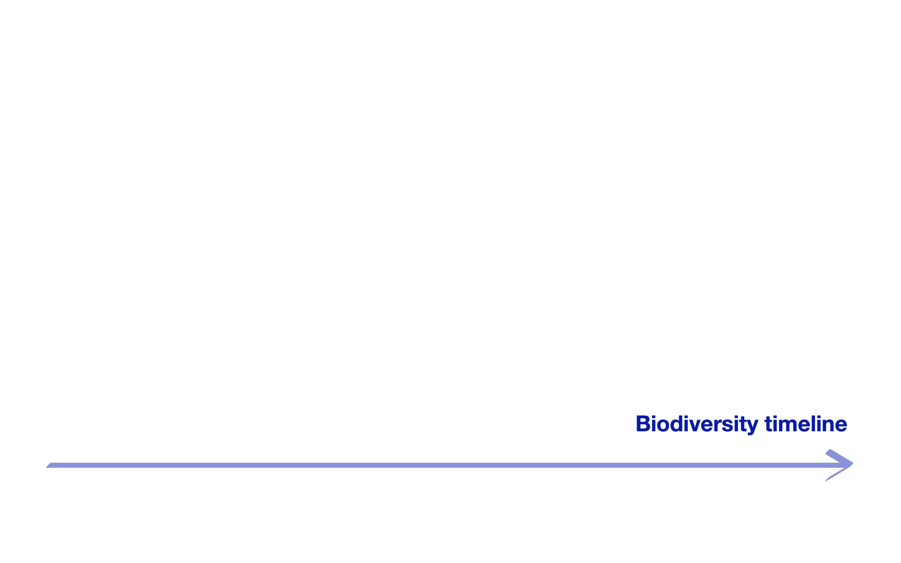
Approximately 80 years ago… Fisher et al. (1943)
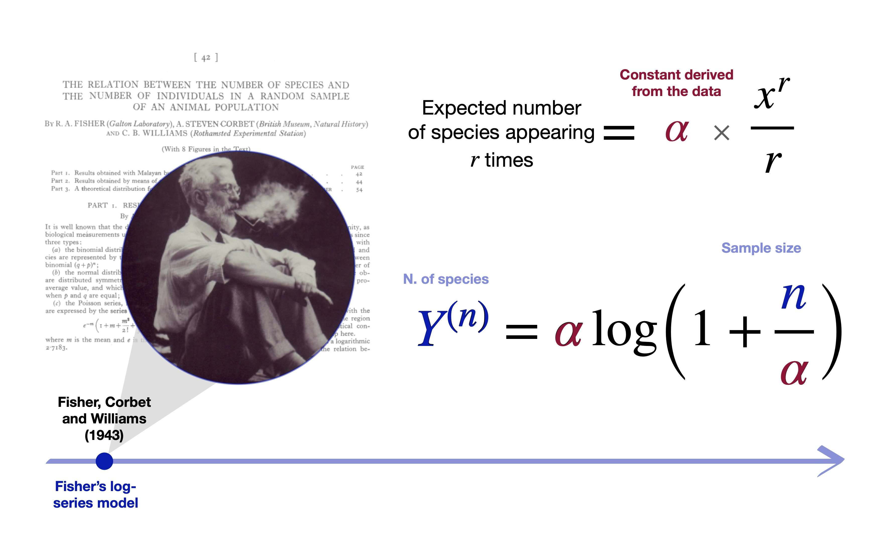
Early ideas (Good 1953; Good and Toulmin 1956)
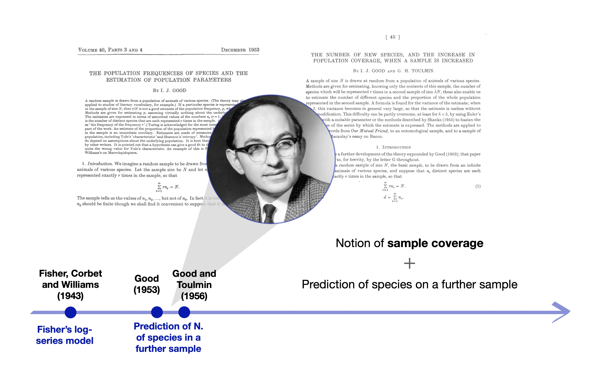
The Ewens sampling formula Ewens (1972)
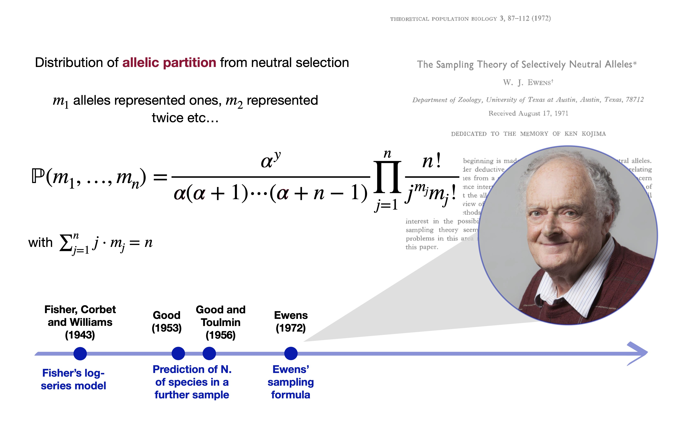
The Dirichlet process (Ferguson 1973)
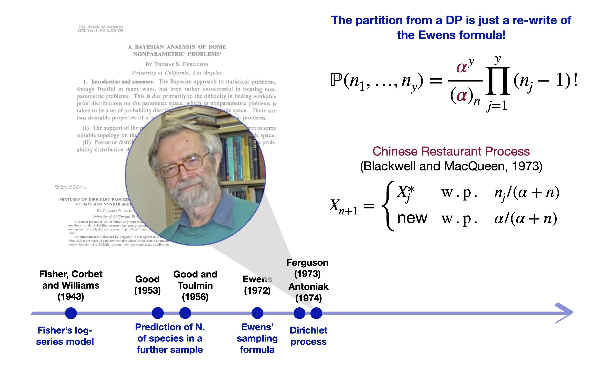
… and species sampling models (Pitman 1996)
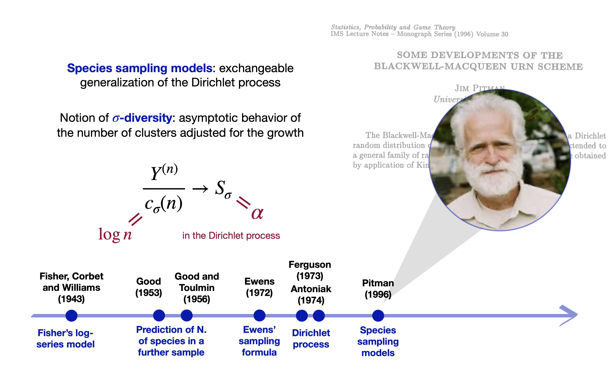
Ewens formula governs the neutral theory! (Hubbell 2001)
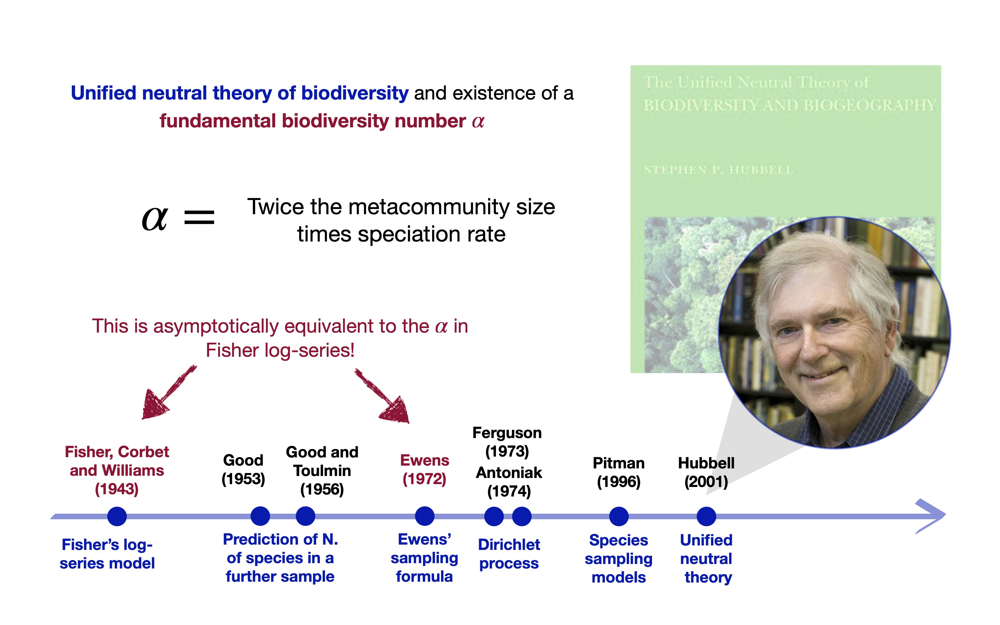
All ties together (McCullagh 2016)
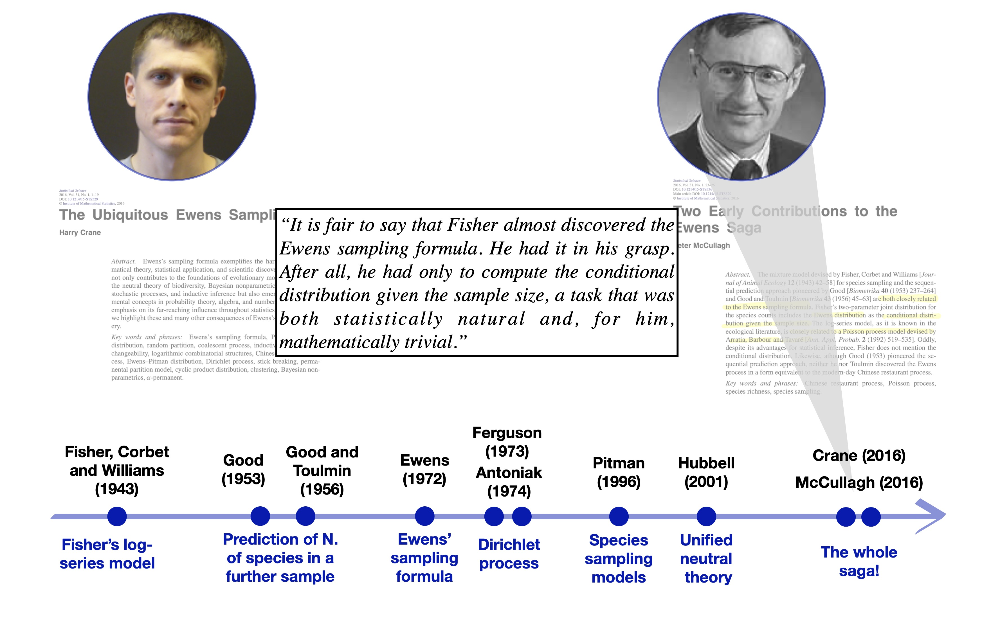
Species sampling models
Let X_1,\dots,X_n be some collection of species or taxa. Suppose X_n are conditionally iid samples from a species sampling model: (X_n \mid \tilde{p}) \overset{\text{iid}}{\sim} \tilde{p}, \qquad \tilde{p}(\cdot) = \sum_{h=1}^{\infty}\pi_h \delta_{Z_h}(\cdot), \qquad n \ge 1, where (\pi_h)_{h \ge 1} is a set of probabilities (species proportions) and Z_h represent distinct species.
The discreteness of \tilde{p} identifies Y^{(n)}=y distinct taxa X_1^*, \ldots, X_y^* with frequencies n_1, \ldots, n_y, called abundances in ecology.
Gibbs-type priors have emerged as the most natural extension of the DP (De Blasi et al. 2015).
The predictive distribution of a Gibbs-type prior is given by: \mathbb{P}(X_{n+1} \in \cdot \mid X_1,\dots,X_n) = \frac{V_{n+1, y+1}}{V_{n,y}}P(\cdot) + \frac{V_{n+1, y}}{V_{n,y}}\sum_{j=1}^y(n_j - \sigma)\delta_{X^*_j}(\cdot). where (a)_{n} denotes a rising factorial, and \sigma < 1 is the discount parameter. The V_{n,y}’s are non-negative weights satisfying a forward recursive equation.
Three notable examples
Dirichlet multinomial (\sigma < 0). For \sigma < 0 and H \in \mathbb{N}, a valid set of Gibbs coefficients is given by: V_{n, y}(\sigma, H) := \frac{|\sigma|^{y-1}\prod_{j=1}^{y-1}(H - j)}{(H|\sigma| +1)_{n-1}} \mathbb{I}(y \le H).
Dirichlet process (\sigma = 0). For \sigma = 0 and \alpha > 0, a valid set of Gibbs coefficients is given by: V_{n, y}(\alpha) := \frac{\alpha^y}{(\alpha)_n}.
\sigma-stable Poisson–Kingman process (0 < \sigma < 1). For \sigma \in (0,1) and gamma \gamma > 0, a valid set of Gibbs coefficients is defined as: V_{n, y}(\sigma, \gamma) := \frac{\sigma^y\gamma^y}{\Gamma(n-y\sigma)f_{\sigma}\left(\gamma^{-1/\sigma}\right)} \int_{0}^{1}s^{n-1-y\sigma}f_{\sigma}\left(\left(1-s\right)\gamma^{-1/\sigma}\right)\, \mathrm{d}s, where f_\sigma(t) = (\pi)^{-1} \sum_{h=1}^\infty (-1)^{h+1}\sin(h \pi \sigma )\Gamma(h\sigma + 1) / t^{h\sigma + 1}.
A characterization theorem
Theorem (Gnedin and Pitman 2005)
The Gibbs coefficients V_{n, y} satisfy the recursive equation in the following three cases:
If \sigma < 0, whenever V_{n, y} = \sum_{h=1}^\infty V_{n, y}(\sigma, h) p(h), for some discrete random variable H \in \mathbb{N} with pdf p(h), where the V_{n, y}(\sigma, h)’s are those of the Dirichlet multinomial.
If \sigma = 0, whenever V_{n, y} = \int_{\mathbb{R}^+} V_{n, y}(\alpha) p(\mathrm{d}\alpha), for some positive random variable \alpha with probability measure p(\mathrm{d}\alpha), where the V_{n, y}(\alpha)’s are those of the Dirichlet process.
If \sigma \in (0,1), whenever V_{n, y} = \int_{\mathbb{R}^+} V_{n, y}(\sigma, \gamma) p(\mathrm{d}\gamma), for some positive random variable \gamma with probability measure p(\mathrm{d}\gamma), where the V_{n, y}(\sigma, \gamma)’s are those of the \sigma-stable PK.
The Dirichlet multinomial, Dirichlet process, and \sigma-stable PK form the foundation of any Gibbs-type prior.
In fact, any Gibbs-type process can be represented hierarchically, involving a suitable prior distribution for the key parameters H, \alpha, and \gamma.
The quantification of biodiversity (Lijoi et al. 2007a)
The simplest measure of biodiversity is arguably the taxon richness Y^{(n)} = y.
A priori, the distribution of Y^{(n)} induced by a Gibbs-type prior has a simple form: \mathbb{P}(Y^{(n)} = y)=V_{n,y}\frac{\mathscr{C}(n,y;\sigma)}{\sigma^y}, where \mathscr{C}(n, y;\sigma) denotes a generalized factorial coefficient.
The a priori expectations \mathbb{E}(K_1),\dots,\mathbb{E}(K_n) define a model-based rarefaction curve.
The posterior distribution of the number of previously unobserved taxa Y_m^{(n)} is \mathbb{P}(Y_m^{(n)}= j \mid X_1,\dots,X_n)=\frac{V_{n + m, y + j}}{V_{n, y}}\frac{\mathscr{C}(m, j;\sigma, -n + y\sigma)}{\sigma^j}, \qquad j=0,\dots,m, where \mathscr{C}(m, j;\sigma, -n + y\sigma) is the noncentral generalized factorial coefficient.
The posterior expectations \mathbb{E}(Y^{(n+1)} \mid Y^{(n)} = y), \dots, \mathbb{E}(Y^{(n + m)} \mid Y^{(n)} = y) represents a model-based extrapolation of the accumulation curve.
Rarefaction and extrapolation

The \sigma-diversity (Pitman 2003)
- Let Y^{(n)} be the number of distinct values arising from a Gibbs-type prior:
- Let \sigma < 0 and V_{n, y}(\sigma, H) be the weights of a Dirichlet multinomial, then Y^{(n)} \rightarrow H a.s.
- Let \sigma = 0 and V_{n, y}(\alpha) be the weights of a Dirichlet process, then Y^{(n)} / \log(n) \rightarrow \alpha a.s.
- Let \sigma \in (0,1) and V_{n, y}(\sigma, \gamma) be the weights of a \sigma-stable PK, then Y^{(n)} / n^\sigma \rightarrow \gamma a.s.
- Moreover, consider a generic set of weights V_{n, y} and let c_\sigma(n) = \begin{cases} 1, & \sigma <0,\\[2mm] \log(n), & \sigma = 0,\\[1mm] n^{\sigma}, & \sigma \in (0,1) \end{cases} Then, as n \rightarrow \infty: \frac{Y^{(n)}}{c_\sigma(n)} \overset{\textup{a.s.}}{\longrightarrow} S_{\sigma}. The r.v. S_{\sigma} is the \sigma-diversity and its distribution coincides with the prior for H, \alpha, and \gamma.
The \sigma-diversity (Pitman 2003)
Broadly speaking, the \sigma-diversity can be seen as a rescaled richness measure.
The \sigma-diversity is deterministic and assumed to be known in the Dirichlet multinomial, Dirichlet process, and \sigma-stable PK.
However, the \sigma-diversities H, \alpha, or \gamma are typically unknown, and they can be estimated employing a prior distribution, leading to a Gibbs-type prior.
The posterior law of the \sigma-diversity is a key quantity for measuring biodiversity. The posterior law of S_\sigma has an elegant connection with accumulation curves.
Theorem (Rigon et al. 2025b)
Let X_1,\dots,X_{n+m} be a sample from a Gibbs-type prior with Y^{(n+m)} distinct values. Then:
\left(\frac{Y^{(n+m)}}{c_\sigma(m)} \mid X_1,\dots,X_n \right) \overset{d}{\longrightarrow} \tilde{S}_{\sigma}, \qquad \tilde{S}_\sigma \overset{d}{=} (S_\sigma \mid X_1,\dots,X_n), as m \rightarrow \infty, where S_\sigma is the \sigma-diversity.
Tree species in the Amazon Basin (Hubbell et al. 2008)
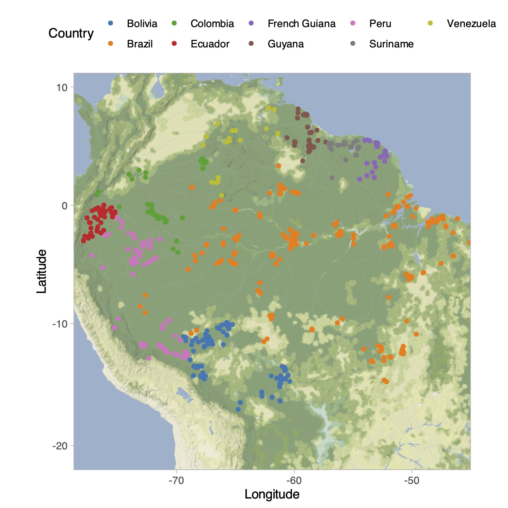
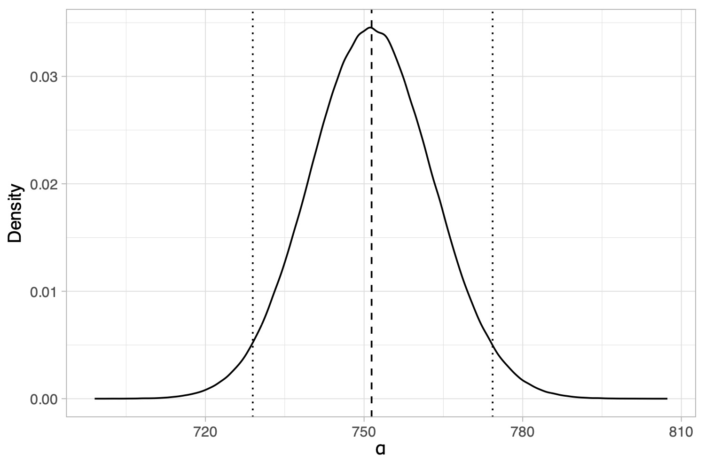
How to get a Bayesian estimator for the biodiversity? We can place a prior on \alpha and the compute its posterior distribution using Bayes theorem.
Posterior distribution of the \sigma-diversity \alpha, under a (conjugate) Stirling-gamma prior (Zito et al. 2024). The dotted lines represent 95% credible intervals. The dashed line is the posterior mean.
Historical summary and extensions
The fundamental biodiversity number \alpha is a growth-adjusted richness: \frac{Y^{(n)}}{\log n} \stackrel{\mathrm{a.s.}}{\longrightarrow} \alpha, \qquad n\to \infty
The \alpha from the neutral theory, DP and Fisher log-series is the same for large n: \underbrace{y = \hat{\alpha}^\mathrm{Fisher}\log\Big(1 + \frac{n}{\hat{\alpha}^\mathrm{Fisher}}\Big)}_{\text{Solution from Fisher}} \ \stackrel{\text{Under large } n}{\approx} \ \underbrace{\sum_{j = 1}^{n} \frac{\hat{\alpha}^{\text{DP}}}{\hat{\alpha}^{\text{DP}} + j - 1} = y}_{\text{MLE from Hubbell and DP}}
There are a lot of possible extensions. This is a very biased list:
- The choice \sigma \in (0, 1) allows for polynomial growth (Lijoi et al. 2007b; Pitman and Yor 1997) while \sigma < 0 leads to a finite richness (Gnedin 2010; Lijoi et al. 2020).
- Multiple samples, a.k.a. partial exchangeability (Camerlenghi et al. 2019; Franzolini et al. 2025)
- Enriched processes, taxonomical data (Rigon et al. 2025a; Rigon et al. 2025b; Zito et al. 2023).
- Incidence data and feature models (Ghilotti et al. 2025).
- What about covariates?
Specimens and BINs in Barcode of Life

Our data: global Malaise Trap project.
We have a total of 1,781,340 arthropods split across 154,688 BINs and N = 2415 sampling sites.
How can we link covariates with biodiversity?
For outcome Y_i and covariates \bm{x}_i = (x_{i1}, \ldots, x_{ip}) \in \mathbb{R}^p, i = 1, \ldots, N, a generalized linear model (GLM) extends the linear model in non-Gaussian settings via three ingredients:
The exponential dispersion family directing each Y_i: f(y_i; \theta_i, \phi) = \exp\left\{\frac{y_i \theta_i - b(\theta_i)}{a_i(\phi)} + c(y_i, \phi)\right\}, where \theta_i \in \Theta is the natural parameter, \phi > 0 is the dispersion, and a_i,b,c are given functions.
The linear predictor \eta_i = \bm{x}_i^\top \bm{\beta}, with \bm{\beta} \in \mathbb{R}^p.
A monotonic link function g that links \eta_i with the mean of Y_i, namely \mu(\theta_i) = \mu_i: \mathbb{E}(Y_i \mid \bm{x}_i) = \mu_i = g^{-1}(\eta_i). The link is canonical when g is such that \theta_i = \eta_i.
Is there an exponential family that is related to a sample-specific diversity \alpha_i?
The Hubbell regression
- The number of distinct species from a DP is an exponential family! \mathbb{P}(Y^{(n)} = y; \alpha) = \frac{\alpha^y}{(\alpha)_n}|s(n, y)|, \qquad y \in\{ 1, \ldots, n\}, where (\alpha)_n = \Gamma(\alpha + n)/\Gamma(\alpha) and |s(n,y)| are signless Stirling numbers of the first kind.
The Hubbell regression is a GLM where:
The distinct species Y_i^{(n_i)} for i=1,\dots,N are independent draws from the distribution f(y_i; \theta_i) = \exp \left\{y_i \theta_i - \log[\Gamma(e^{\theta_i} + n_i) - \Gamma(e^{\theta_i})] + \log|s(n_i, y_i)|\right\}, with \alpha_i = e^{\theta_i} whose mean and variance functions are \mu_i = \mu(\theta_i, n_i) = \sum_{j=0}^{n_i-1} \frac{e^{\theta_i}}{e^{\theta_i} + j}, \qquad V(\mu(\theta_i, n_i)) = \sum_{j=0}^{n_i-1} \frac{e^{\theta_i}}{e^{\theta_i} + j}\left(1 - \frac{e^{\theta_i}}{e^{\theta_i} + j}\right).
The link function g depends on \eta_i and n_i and satisfies \mathbb{E}(Y_i\mid \bm{x}_i, n_i) = \mu_i = g^{-1}(\bm{x}_i^\top \bm{\beta}, n_i).
The canonical link
Using the canonical link, we have: \log \alpha_i = \theta_i = \bm{x}_i^\top \bm{\beta} = \eta_i, \qquad \mu_i = \mu(\bm{x}_i^\top \bm{\beta}, n_i) = \sum_{j = 0}^{n_i-1} \frac{e^{\bm{x}_i^\top \bm{\beta}}}{e^{\bm{x}_i^\top \bm{\beta}} + j} = g^{-1}(\bm{x}_i^\top \bm{\beta}, n_i).
Coefficients \bm{\beta} have the classic interpretation of log-linear models in terms of \alpha-diversity
- The saturated model corresponds to the case in which \hat{\alpha}_i \approx \hat{\alpha}^{\text{Fisher}}_i. The null model corresponds to the case \hat{\alpha}_i = \hat{\alpha} for all sites, i.e. there is no variation in biodiversity across sampling sites.
Theorem (Poisson regression with log-log offset)
Call \gamma = 0.5772\dots the Euler’s constant. Under large values of n, when each n_i \to \infty we have Y^{(n)}_i \;\dot{\sim}\; 1 + \mathrm{Poisson}\left(\exp\left\{\bm{x}_i^\top\bm{\beta} + \log(\gamma + \log n_i)\right\}\right). Informally, we will say that \hat{\bm{\beta}}^{\mathrm{Hubbell}} \approx \hat{\bm{\beta}}^{\mathrm{Poisson}} .
Beyond the logarithmic growth: non-canonical links
Extensions of the neutral theory of Hubbell (2001) proposes a power-law behavior with a dispersal limitation parameter \omega \ge 0 so that \mathbb{E}\left(Y_i^{(n)}\right) = \sum_{j = 0}^{n_i-1} j^{-\omega} \frac{\alpha_i}{\alpha_i + j}.
Our proposal: a flexible growth depending on \sigma < 1 via non-canonical link \mu_i = \mu(\bm{x}_i^\top\bm{\beta}, n_i, \sigma) = \sum_{j = 0}^{n_i-1} \frac{e^{\bm{x}_i^\top\bm{\beta}}}{e^{\bm{x}_i^\top\bm{\beta}} + j^{1-\sigma}} = g^{-1}(\bm{x}_i^\top\bm{\beta}, n_i, \sigma), \qquad \sigma < 1. The parameter \sigma plays the same role it has in Gibbs-type priors.

Regression-based biodiversity indexes
Theorem (Regression-based diversity)
For the mean function of the a Hubbell regression model with the aforementioned non-canonical link, it holds \frac{\mu(\bm{x}_i^\top \bm{\beta}; n, \sigma)}{c_n(\sigma)} \longrightarrow S_\sigma(\bm{x}_i^\top\bm{\beta}), \qquad n \to \infty, Moreover:
- If \sigma = 0, then c_n(\sigma) = \log n (logarithmic growth) and S_\sigma(\bm{x}_i^\top\bm{\beta}) = e^{\bm{x}_i^\top\bm{\beta}} = \alpha_i;
- If \sigma \in (0, 1), then c_n(\sigma) = n^{\sigma} (polynomial growth) and S_\sigma(\bm{x}_i^\top\bm{\beta}) = e^{\bm{x}_i^\top\bm{\beta}}/\sigma = \alpha_i / \sigma;
- if \sigma < 0, then c_n(\sigma) = 1 (finite richness) and S_\sigma(\bm{x}_i^\top\bm{\beta}) \approx C_\sigma^{-1}e^{\bm{x}_i^\top\bm{\beta}/(1-\sigma)} = C_\sigma^{-1} \alpha_i^{1/(1-\sigma)}, with C_\sigma a known constant.
- This gives a novel notion of regression-based biodiversity.
Iteratively reweighted least squares (IRLS)
Update the mean: \mu_i^{(t)} \gets \sum_{j = 0}^{n_i-1} \frac{e^{\eta_i^{(t)}}}{e^{\eta_i^{(t)}} + j^{1-\sigma}}, \qquad \eta_i^{(t)} = \bm{x}_i^\top \bm{\beta}^{(t)}.
Numerically retrieve the diversity \alpha_i and compute variances: \alpha_i^{(t)} \gets \texttt{uniroot}\!\left(\sum_{j=0}^{n_i-1}\frac{x}{x+j}=\mu_i^{(t)}\right)\texttt{\$root}, \qquad v_i^{(t)} \gets \sum_{j=0}^{n_i-1} j\,\frac{\alpha_i^{(t)}}{(\alpha_i^{(t)}+j)^2}.
Compute working weights: w_i^{(t)} \gets \frac{1}{v_i^{(t)}} \sum_{j=0}^{n_i-1} j\frac{\alpha_i^{(t)}} {(\alpha_i^{(t)}+j^{1-\sigma})^2}.
Update the regression coefficients:
\bm{\beta}^{(t+1)} \gets (\bm{X}^\top \bm{W}^{(t)} \bm{X})^{-1} \bm{X}^\top \bm{W}^{(t)} \bm{z}^{(t)}, \qquad z_i^{(t)} \gets \eta_i^{(t)} + \frac{y_i - \mu_i^{(t)}}{(w_i^{(t)}v_i^{(t)})^{1/2}}.
Composite marginal likelihood and standard errors
The assumption behind GLMs is that observations are independent. In our case, we might have seen the same species (or BIN) at two different locations!
This information is lost when calculating the number Y_i^{(n_i)}. However, we can interpret L(\boldsymbol{\beta}) \propto \prod_{i=1}^N \frac{\alpha_i^{y_i}} {(\alpha_i)_{n_i}}, as a composite marginal likelihood. The estimating equation is still unbiased and estimates consistent.
We propose spatially heteroskedastic-consistent standard errors (Conley 1999) that use the Jaccard Index (or similar indices) between two samples: \widehat{\mathrm{se}}(\hat{\boldsymbol{\beta}}) = (\bm{X}^\top \hat{\bm{W}}\bm{X})^{-1} \textstyle\sum_{ik} {\color{#8B0000}{s_{ik}}}\, {\color{blue}{\hat{\bm{u}}_i\hat{\bm{u}}_k^\top}}\, (\bm{X}^\top \hat{\bm{W}}\bm{X})^{-1}, \qquad {\color{blue}{\hat{\bm{u}}_i}} = \frac{\partial}{\partial\boldsymbol{\beta}} \log \mathcal{L}(\hat{\boldsymbol{\beta}}), where {\color{#8B0000}{s_{ik}}} \in [0,1] is the fraction of shared BINs between locations i and k.
Determinants of biodiversity in the global malaise trap
- We run the Hubbel regression model:
cbind(n, y) ~ realm + habitat_type + temperature_2m + total_precipitation + relative_humidity + windspeed + month + year + ns(elev, df = 10) + ns(Latitude, df = 10) + ns(Longitude, df = 10)We estimate \hat{\sigma} = 0.53 via maximum likelihood, which amounts to a square root growth.
P-values are corrected for shared species via the sandwich estimator.
| Variable | Estimate | Std. Error | Pr(>|z|) | Signif. |
|---------------------------------|---------:|-----------:|-------------:|---------|
| (Intercept) | -0.019 | 0.489 | 0.969 | |
| realm: Australasia | -0.486 | 0.148 | 0.001 | ** |
| realm: Indomalayan | 0.089 | 0.142 | 0.529 | |
| realm: Nearctic | -0.150 | 0.469 | 0.750 | |
| realm: Neotropic | 0.262 | 0.420 | 0.533 | |
| realm: Palearctic | -0.005 | 0.187 | 0.977 | |
| habitat: Grassland | -0.274 | 0.053 | 0.000 | *** |
| habitat: Mixed | 0.044 | 0.059 | 0.463 | |
| habitat: Tundra | -0.334 | 0.177 | 0.059 | . |
| habitat: Urban | -0.374 | 0.067 | 0.000 | *** |
| habitat: Wetland | -0.087 | 0.069 | 0.210 | |
| temperature at 2m | 0.049 | 0.005 | < 2.2e-16 | *** |
| total precipitation | -0.009 | 0.003 | 0.001 | ** |
| relative humidity | 0.008 | 0.002 | 0.000 | *** |
| wind speed | -0.049 | 0.012 | 0.000 | *** |Results: latitude has a major effect!
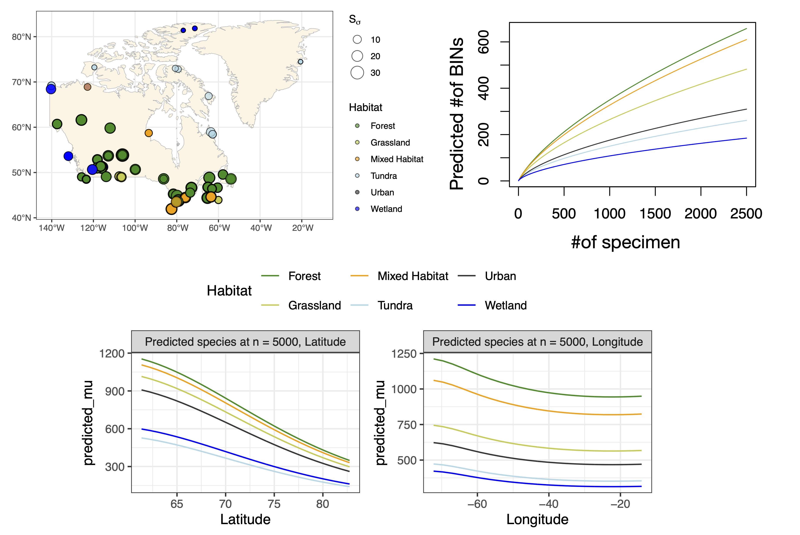
Summary and future directions
- Fisher’s \alpha is the same quantity described by Hubbell’s unified neutral theory of biodiversity, and it has deep connections with the Dirichlet process.
Rigon, T., Hsu, C., and Dunson D.B. (2025). A Bayesian theory for estimation of biodiversity. arXiv:2502.01333
Zito, A., Rigon, T., Roslin, T., Niittynen, P., Hebert, P. D. N., Zakharov, E., Ratnasingham, S., iBOL Consortium, Ovaskainen, O. and Dunson, D. B. (2026). Predicting global biodiversity via Hubbell regression. bioRxiv
The Hubbell regression extends the neutral theory in a covariate-dependent GLM framework.
Different growth rates are captured via \sigma < 0, \sigma = 0, and \sigma \in (0,1).
From here to infinity: next steps
- Extend to mixed models, allowing for random effects;
- More on nonparametrics: GAMs
Software: the R package HubbellGLM